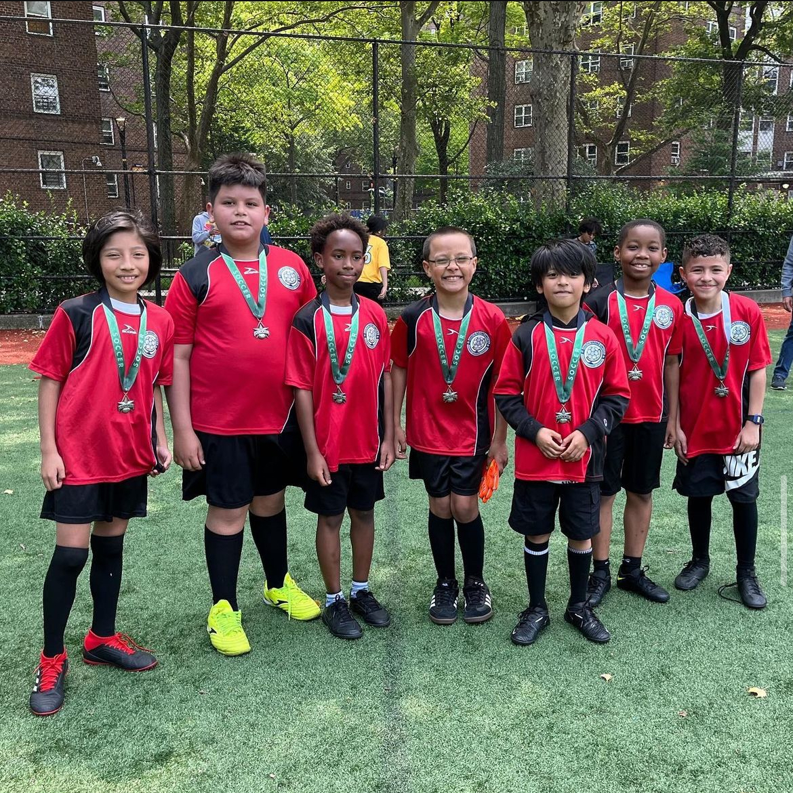

About Me!
As you read in my introduction, I like to play soccer. I play for my school team (JFK Campus) in the Fall and for DUSC in the Winter and Spring. I enjoy playing soccer because I get to work together with others in a team and I have seen how my communication skills have developed while playing soccer.
I also coach U10 ,U12 and U15 teams for South Bronx United throughout the year. This has been very rewarding, as I have seen kids learn to love soccer the way I do and become better people on and off the field. Here is a picture of my team from last Spring:
Another one of my hobbies is collecting stamps. I enjoy collecting stamps because there are so many different things that have been printed on stamps. No matter what you want to collect, it will be on a stamp wheather from the US or another country. Here is an image of my at a stamp show last summer.